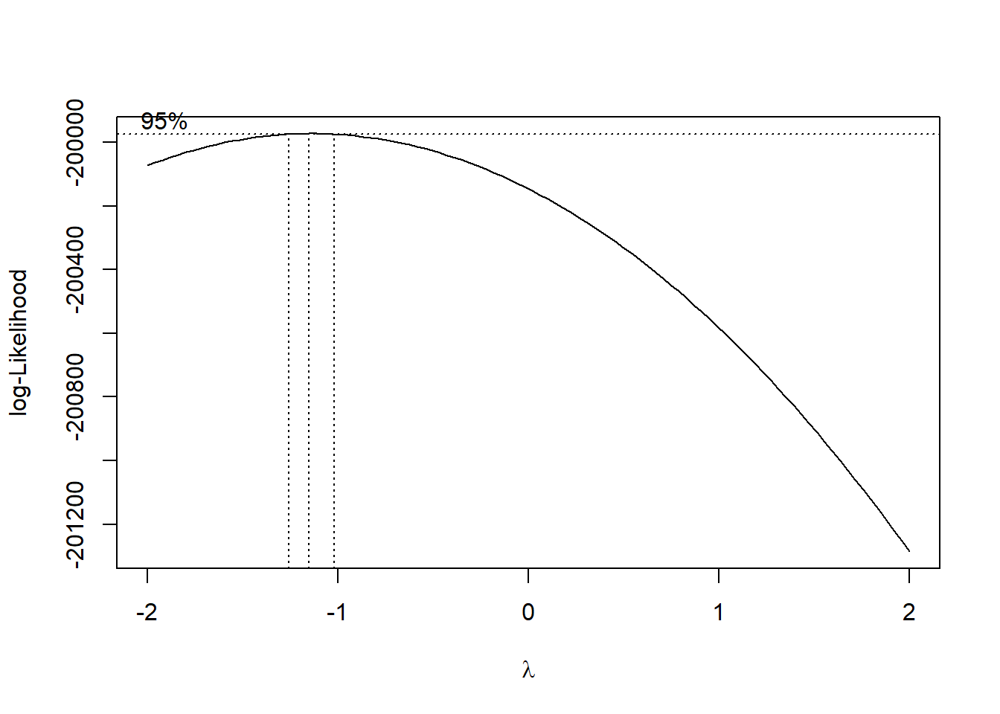

# library(dplyr)
# library(here)
library(targets)
# library(tidyr)
source(here::here("R/utils.R"))
utc_minus_3_states <- c(
"Amapá", "Pará", "Maranhão", "Tocantins", "Piauí", "Ceará",
"Rio Grande do Norte", "Paraíba", "Pernambuco", "Alagoas", "Sergipe",
"Bahia", "Distrito Federal", "Goiás", "Minas Gerais", "Espírito Santo",
"Rio de Janeiro", "São Paulo", "Paraná", "Santa Catarina",
"Rio Grande do Sul"
)
data <-
targets::tar_read("geocoded_data", store = here::here("_targets")) |>
dplyr::filter(state %in% utc_minus_3_states) |>
dplyr::select(msf_sc, age, sex, state, latitude, longitude) |>
dplyr::mutate(msf_sc = transform_time(msf_sc)) |>
tidyr::drop_na(msf_sc, age, sex, latitude)Appendix E — Appendice: chapter 6 supplemental material
You are reading the work-in-progress of this thesis. This chapter should be readable but is currently undergoing final polishing.
The analyses here are 100% reproducible. You can find all the code used in this thesis along with the computational notebooks at https://github.com/danielvartan/mastersthesis/.
E.1 Hypothesis
Populations residing near the equator (latitude 0°) exhibit, on average, a shorter/morning circadian phenotype when compared to populations residing near the poles of the planet (Horzum et al. 2015; Hut et al. 2013; Leocadio-Miguel et al. 2017, 2014; Colin S. Pittendrigh, Kyner, and Takamura 1991; Randler and Rahafar 2017).
The study hypothesis was tested using nested models of multiple linear regressions. The main idea of nested models is to verify the effect of the inclusion of one or more predictors in the model variance explanation (i.e., the \(\text{R}^{2}\)) (Allen 1997). This can be made by creating a restricted model and then comparing it with a full model. Hence, the hypothesis can be schematized as follows.
\[ \begin{cases} \text{H}_{0}: \text{R}^{2}_{\text{res}} >= \text{R}^{2}_{\text{full}} \\ \text{H}_{a}: \text{R}^{2}_{\text{res}} < \text{R}^{2}_{\text{full}} \end{cases} \]
The general equation for the F-test (Allen 1997, 113) :
\[ \text{F} = \cfrac{\text{R}^{2}_{F} - \text{R}^{2}_{R} / (k_{F} - k_{R})}{(1 - \text{R}^{2}_{F}) / (\text{N} - k_{F} - 1)} \]
Where:
- \(\text{R}^{2}_{F}\) = Coefficient of determination for the full model
- \(\text{R}^{2}_{R}\) = Coefficient of determination for the restricted model
- \(k_{F}\) = Number of independent variables in the full model
- \(k_{R}\) = Number of independent variables in the restricted model
- \(\text{N}\) = Number of observations in the sample
\[ \text{F} = \cfrac{\text{Additional Var. Explained} / \text{Additional d.f. Expended}}{\text{Var. unexplained} / \text{d.f. Remaining}} \]
E.2 Assumptions
See DeGroot and Schervish (2012, 736–38) to learn more.
The predictor is known. Either the vectors \(z_{1}, \dots , z_{n}\) are known ahead of time, or they are the observed values of random vectors \(Z_{1}, \dots , Z_{n}\) on whose values we condition before computing the joint distribution of (\(Y_{1}, \dots , Y_{n}\)).
Normality. For \(i = 1, \dots, n\), the conditional distribution of \(Y_{i}\) given the vectors \(z_{1}, \dots , z_{n}\) is a normal distribution (normality assumption).
Linear mean. There is a vector of parameters \(\beta = (\beta_{0}, \dots, \beta_{p - 1})\) such that the conditional mean of \(Y_{i}\) given the values \(z_{1}, \dots , z_{n}\) has the form
\[ z_{i0} \beta_{0} + z_{i1} \beta_{1} + \cdots + z_{ip - 1} \beta_{p - 1} \]
for \(i = 1, \dots, n\) (zero error mean assumption).
Common variance. The observations \(Y_{1}, \dots , Y_{n}\) have the same variance \(\sigma^{2}\) (homoscedasticity assumption).
Independence. The random variables \(Y_{1}, \dots , Y_{n}\) are independent given the observed \(z_{1}, \dots , z_{n}\) (independent errors assumption).
E.3 Data preparation
E.4 Restricted model
# library(MASS)
box_cox <- MASS::boxcox(msf_sc ~ age + sex, data = data)lambda <- box_cox$x[which.max(box_cox$y)]
lambda
#> [1] -1.1111# library(stats)
res_model <- stats::lm(
((msf_sc^lambda - 1) / lambda) ~ age + sex, data = data
)# library(broom)
broom::tidy(res_model)| term | estimate | std.error | statistic | p.value |
|---|---|---|---|---|
| (Intercept) | 0.9 | 0 | 513579298.250 | 0 |
| age | 0.0 | 0 | -65.128 | 0 |
| sexMale | 0.0 | 0 | 13.020 | 0 |
# library(broom)
# library(dplyr)
# library(tidyr)
broom::glance(res_model) |> tidyr::pivot_longer(cols = dplyr::everything())| name | value |
|---|---|
| r.squared | 0.054 |
| adj.r.squared | 0.054 |
| sigma | 0.000 |
| statistic | 2178.876 |
| p.value | 0.000 |
| df | 2.000 |
| logLik | 1106194.897 |
| AIC | -2212381.794 |
| BIC | -2212344.801 |
| deviance | 0.000 |
| df.residual | 76741.000 |
| nobs | 76744.000 |
# library(olsrr)
# res_model |> olsrr::ols_regress()
res_model |> summary()
#>
#> Call:
#> stats::lm(formula = ((msf_sc^lambda - 1)/lambda) ~ age + sex,
#> data = data)
#>
#> Residuals:
#> Min 1Q Median 3Q Max
#> -0.0000004859 -0.0000000911 -0.0000000031 0.0000000916 0.0000004204
#>
#> Coefficients:
#> Estimate Std. Error t value Pr(>|t|)
#> (Intercept) 0.8999976603602 0.0000000017524 513579298.2 <2e-16 ***
#> age -0.0000000033812 0.0000000000519 -65.1 <2e-16 ***
#> sexMale 0.0000000132309 0.0000000010162 13.0 <2e-16 ***
#> ---
#> Signif. codes: 0 '***' 0.001 '**' 0.01 '*' 0.05 '.' 0.1 ' ' 1
#>
#> Residual standard error: 0.000000133 on 76741 degrees of freedom
#> Multiple R-squared: 0.0537, Adjusted R-squared: 0.0537
#> F-statistic: 2.18e+03 on 2 and 76741 DF, p-value: <2e-16E.4.1 Residual diagnostics
Normality and zero mean error assumption.
# library(here)
# library(stats)
source(here::here("R/stats_sum.R"))
source(here::here("R/utils.R"))
res_model |>
stats::residuals() |>
stats_sum(print = FALSE) |>
list_as_tibble()| name | value |
|---|---|
| n | 76744 |
| n_rm_na | 76744 |
| n_na | 0 |
| mean | 6.60699976667332e-23 |
| var | 0.0000000000000176852866826985 |
| sd | 0.000000132986039427823 |
| min | -0.000000485865195534305 |
| q_1 | -0.0000000911138016567908 |
| median | -0.00000000313530324787135 |
| q_3 | 0.000000091553820345483 |
| max | 0.000000420368932360539 |
| iqr | 0.000000182667622002274 |
| skewness | -0.0105262146639209 |
| kurtosis | 2.82813923301771 |
# See `?moments::agostino.test` & `?fBasics::dagoTest()` to learn more.
# library(fBasics)
# library(moments)
source(here::here("R/normality_sum.R"))
res_model |>
stats::residuals() |>
normality_sum()| test | p_value |
|---|---|
| Anderson-Darling | 0.000 |
| Bonett-Seier | 0.000 |
| Cramer-von Mises | 0.000 |
| D'Agostino Omnibus Test | NA |
| D'Agostino Skewness Test | 0.234 |
| D'Agostino Kurtosis Test | NA |
| Jarque–Bera | 0.000 |
| Lilliefors (K-S) | 0.000 |
| Pearson chi-square | 0.000 |
| Shapiro-Francia | NA |
| Shapiro-Wilk | NA |
Correlation between observed residuals and expected residuals under normality.
# library(olsrr)
res_model |> olsrr::ols_test_correlation()
#> [1] 0.99929# library(cowplot)
# library(olsrr)
# library(stats)
source(here::here("R/test_normality.R"))
# res_model |> olsrr::ols_plot_resid_qq()
qq_plot <- res_model |>
stats::residuals() |>
plot_qq(print = FALSE)
hist_plot <- res_model |>
stats::residuals() |>
plot_hist(print = FALSE)
cowplot::plot_grid(hist_plot, qq_plot, ncol = 2, nrow = 1)
# library(olsrr)
# Linear mean assumption
res_model |> olsrr::ols_plot_resid_fit()
res_model |> plot(3)E.4.2 Heteroskedasticity
Homoscedasticity assumption.
# library(olsrr)
# "It test whether variance of errors from a regression is dependent on the values of a independent variable."
res_model |> olsrr::ols_test_breusch_pagan()
#>
#> Breusch Pagan Test for Heteroskedasticity
#> -----------------------------------------
#> Ho: the variance is constant
#> Ha: the variance is not constant
#>
#> Data
#> --------------------------------------------------------
#> Response : ((msf_sc^lambda - 1)/lambda)
#> Variables: fitted values of ((msf_sc^lambda - 1)/lambda)
#>
#> Test Summary
#> -----------------------------
#> DF = 1
#> Chi2 = 70149.3586
#> Prob > Chi2 = 0.0000# library(olsrr)
res_model |> olsrr::ols_test_score()
#>
#> Score Test for Heteroskedasticity
#> ---------------------------------
#> Ho: Variance is homogenous
#> Ha: Variance is not homogenous
#>
#> Variables: fitted values of ((msf_sc^lambda - 1)/lambda)
#>
#> Test Summary
#> ------------------------
#> DF = 1
#> Chi2 = 0.000
#> Prob > Chi2 = 1.000E.4.3 Collinearity diagnostics
Independence assumption.
# library(olsrr)
res_model |> olsrr::ols_coll_diag()
#> Tolerance and Variance Inflation Factor
#> ---------------------------------------
#> Variables Tolerance VIF
#> 1 age 0.9988 1.0012
#> 2 sexMale 0.9988 1.0012
#>
#>
#> Eigenvalue and Condition Index
#> ------------------------------
#> Eigenvalue Condition Index intercept age sexMale
#> 1 2.422418 1.0000 0.011753 0.011936 0.0669897
#> 2 0.538450 2.1211 0.015824 0.018848 0.9280439
#> 3 0.039132 7.8679 0.972423 0.969216 0.0049664The variance inflation factor measures how much the behavior (variance) of an independent variable is influenced, or inflated, by its interaction/correlation with the other independent variables (e.g., VIF equal to 1 = variables are not correlated).
# library(car)
res_model |> car::vif()
#> age sex
#> 1.0012 1.0012E.4.4 Measures of influence
# library(olsrr)
res_model |> olsrr::ols_plot_resid_lev()
E.5 Full model
# library(MASS)
box_cox <- MASS::boxcox(
msf_sc ~ age + sex + latitude, data = data
)
box_cox$x[which.max(box_cox$y)] # lambda
#> [1] -1.1515lambda # The same lambda of the restricted model
#> [1] -1.1111# library(stats)
full_model <- stats::lm(
((msf_sc^lambda - 1) / lambda) ~ age + sex + latitude,
data = data
)# library(broom)
# ?broom::tidy.lm
broom::tidy(full_model)| term | estimate | std.error | statistic | p.value |
|---|---|---|---|---|
| (Intercept) | 0.9 | 0 | 391908052.847 | 0 |
| age | 0.0 | 0 | -66.928 | 0 |
| sexMale | 0.0 | 0 | 13.558 | 0 |
| latitude | 0.0 | 0 | -23.852 | 0 |
# library(broom)
# library(dplyr)
# library(tidyr)
# ?broom::glance.lm
broom::glance(full_model) |>
tidyr::pivot_longer(cols = dplyr::everything())| name | value |
|---|---|
| r.squared | 0.061 |
| adj.r.squared | 0.061 |
| sigma | 0.000 |
| statistic | 1652.979 |
| p.value | 0.000 |
| df | 3.000 |
| logLik | 1106478.331 |
| AIC | -2212946.661 |
| BIC | -2212900.420 |
| deviance | 0.000 |
| df.residual | 76740.000 |
| nobs | 76744.000 |
# full_model |> olsrr::ols_regress()
full_model |> summary()
#>
#> Call:
#> stats::lm(formula = ((msf_sc^lambda - 1)/lambda) ~ age + sex +
#> latitude, data = data)
#>
#> Residuals:
#> Min 1Q Median 3Q Max
#> -0.0000004874 -0.0000000911 -0.0000000034 0.0000000912 0.0000004328
#>
#> Coefficients:
#> Estimate Std. Error t value Pr(>|t|)
#> (Intercept) 0.8999976247783 0.0000000022965 391908052.9 <2e-16 ***
#> age -0.0000000034710 0.0000000000519 -66.9 <2e-16 ***
#> sexMale 0.0000000137296 0.0000000010127 13.6 <2e-16 ***
#> latitude -0.0000000018222 0.0000000000764 -23.9 <2e-16 ***
#> ---
#> Signif. codes: 0 '***' 0.001 '**' 0.01 '*' 0.05 '.' 0.1 ' ' 1
#>
#> Residual standard error: 0.000000132 on 76740 degrees of freedom
#> Multiple R-squared: 0.0607, Adjusted R-squared: 0.0607
#> F-statistic: 1.65e+03 on 3 and 76740 DF, p-value: <2e-16E.5.1 Residual diagnostics
Normality and zero mean error assumption.
# library(here)
# library(stats)
source(here::here("R/stats_sum.R"))
source(here::here("R/utils.R"))
full_model |>
stats::residuals() |>
stats_sum(print = FALSE) |>
list_as_tibble()| name | value |
|---|---|
| n | 76744 |
| n_rm_na | 76744 |
| n_na | 0 |
| mean | 4.85272564733669e-24 |
| var | 0.0000000000000175551361304561 |
| sd | 0.00000013249579665203 |
| min | -0.000000487410752460545 |
| q_1 | -0.0000000910649425186321 |
| median | -0.000000003374344652286 |
| q_3 | 0.0000000911899588839585 |
| max | 0.000000432826012898983 |
| iqr | 0.000000182254901402591 |
| skewness | 0.000655994107765645 |
| kurtosis | 2.82688323293117 |
# library(here)
# library(stats)
source(here::here("R/normality_sum.R"))
full_model |>
stats::residuals() |>
normality_sum()| test | p_value |
|---|---|
| Anderson-Darling | 0.000 |
| Bonett-Seier | 0.000 |
| Cramer-von Mises | 0.000 |
| D'Agostino Omnibus Test | NA |
| D'Agostino Skewness Test | 0.941 |
| D'Agostino Kurtosis Test | NA |
| Jarque–Bera | 0.000 |
| Lilliefors (K-S) | 0.000 |
| Pearson chi-square | 0.000 |
| Shapiro-Francia | NA |
| Shapiro-Wilk | NA |
Correlation between observed residuals and expected residuals under normality.
# library(olsrr)
full_model |> olsrr::ols_test_correlation()
#> [1] 0.99929# library(here)
# library(cowplot)
# library(olsrr)
# library(stats)
source(here::here("R/test_normality.R"))
# full_model |> olsrr::ols_plot_resid_qq()
hist_plot <- full_model |>
stats::residuals() |>
plot_hist(print = FALSE)
qq_plot <- full_model |>
stats::residuals() |>
plot_qq(print = FALSE)
cowplot::plot_grid(hist_plot, qq_plot, ncol = 2, nrow = 1)
# library(olsrr)
full_model |> olsrr::ols_plot_resid_fit()
full_model |> plot(3)
E.5.2 Heteroskedasticity
Homoscedasticity assumption.
# library(olsrr)
full_model |> olsrr::ols_test_breusch_pagan()
#>
#> Breusch Pagan Test for Heteroskedasticity
#> -----------------------------------------
#> Ho: the variance is constant
#> Ha: the variance is not constant
#>
#> Data
#> --------------------------------------------------------
#> Response : ((msf_sc^lambda - 1)/lambda)
#> Variables: fitted values of ((msf_sc^lambda - 1)/lambda)
#>
#> Test Summary
#> -----------------------------
#> DF = 1
#> Chi2 = 70101.1634
#> Prob > Chi2 = 0.0000# library(olsrr)
full_model |> olsrr::ols_test_score()
#>
#> Score Test for Heteroskedasticity
#> ---------------------------------
#> Ho: Variance is homogenous
#> Ha: Variance is not homogenous
#>
#> Variables: fitted values of ((msf_sc^lambda - 1)/lambda)
#>
#> Test Summary
#> ------------------------
#> DF = 1
#> Chi2 = 0.000
#> Prob > Chi2 = 1.000E.5.3 Collinearity diagnostics
Independence assumption.
# library(olsrr)
full_model |> olsrr::ols_coll_diag()
#> Tolerance and Variance Inflation Factor
#> ---------------------------------------
#> Variables Tolerance VIF
#> 1 age 0.99354 1.0065
#> 2 sexMale 0.99838 1.0016
#> 3 latitude 0.99441 1.0056
#>
#>
#> Eigenvalue and Condition Index
#> ------------------------------
#> Eigenvalue Condition Index intercept age sexMale latitude
#> 1 3.312504 1.0000 0.00377395 0.0064918 0.0304493 0.0068553
#> 2 0.584652 2.3803 0.00328127 0.0064143 0.9588857 0.0083393
#> 3 0.073700 6.7042 0.00040414 0.5063551 0.0023826 0.5659326
#> 4 0.029145 10.6609 0.99254063 0.4807389 0.0082824 0.4188728The variance inflation factor measures how much the behavior (variance) of an independent variable is influenced, or inflated, by its interaction/correlation with the other independent variables (e.g., VIF equal to 1 = variables are not correlated).
# library(car)
full_model |> car::vif()
#> age sex latitude
#> 1.0065 1.0016 1.0056E.5.4 Measures of influence
# library(olsrr)
full_model |> olsrr::ols_plot_resid_lev()
E.6 Nested regression models test
\[ \begin{cases} \text{H}_{0}: \text{R}^{2}_{\text{res}} >= \text{R}^{2}_{\text{full}} \\ \text{H}_{a}: \text{R}^{2}_{\text{res}} < \text{R}^{2}_{\text{full}} \end{cases} \]
\[ \text{F} = \cfrac{\text{R}^{2}_{F} - \text{R}^{2}_{R} / (k_{F} - k_{R})}{(1 - \text{R}^{2}_{F}) / (\text{N} - k_{F} - 1)} \]
\[ \text{F} = \cfrac{\text{Additional Var. Explained} / \text{Additional d.f. Expended}}{\text{Var. unexplained} / \text{d.f. Remaining}} \]
# library(dplyr)
# library(here)
source(here::here("R/utils-stats.R"))
dplyr::tibble(
name = c("r_squared_res", "r_squared_full", "diff"),
value = c(
r_squared(res_model), r_squared(full_model),
r_squared(full_model) - r_squared(res_model)
)
)| name | value |
|---|---|
| r_squared_res | 0.054 |
| r_squared_full | 0.061 |
| diff | 0.007 |
# library(stats)
stats::anova(res_model, full_model)| Res.Df | RSS | Df | Sum of Sq | F | Pr(>F) |
|---|---|---|---|---|---|
| 76741 | 0 | NA | NA | NA | NA |
| 76740 | 0 | 1 | 0 | 568.94 | 0 |
# library(stats)
# library(here)
source(here::here("R/utils-stats.R"))
n <- nrow(data)
k_res <- length(stats::coefficients(res_model)) - 1
k_full <- length(stats::coefficients(full_model)) - 1
((r_squared(full_model) - r_squared(res_model)) / (k_full - k_res)) / ((1 - r_squared(full_model)) / (n - k_full - 1))
#> [1] 568.94\[ f^{2} = \cfrac{\text{R}^{2}_{F} - \text{R}^{2}_{R}}{1 - \text{R}^{2}_{F}} \]
\[ f^{2} = \cfrac{\text{Additional Var. Explained}}{\text{Var. unexplained}} \]
E.7 Group test
\[ \begin{cases} \text{H}_{0}: \text{MSF}^{0^{o}}_{\text{sc}} >= \text{MSF}^{30^{o}}_{\text{sc}} \\ \text{H}_{a}: \text{MSF}^{0^{o}}_{\text{sc}} < \text{MSF}^{30^{o}}_{\text{sc}} \end{cases} \]
# library(dplyr)
# library(here)
# library(magrittr)
source(here::here("R/stats_sum.R"))
source(here::here("R/utils.R"))
group_1 <- "Amapá" # Boa vista (0° 2′ 18.84″ N, 51° 3′ 59.1″ W)
msf_sc_group_1 <-
data |>
dplyr::filter(state == group_1) |>
magrittr::extract2("msf_sc")
stats_sum_group_1 <-
data |>
dplyr::filter(state == group_1) |>
magrittr::extract2("msf_sc") |>
stats_sum(print = FALSE)
stats_sum_group_1 |> list_as_tibble()| name | value |
|---|---|
| n | 113 |
| n_rm_na | 113 |
| n_na | 0 |
| mean | 103564.475347661 |
| var | 28720417.6933099 |
| sd | 5359.14337308771 |
| min | 92100 |
| q_1 | 99000 |
| median | 104164.285714286 |
| q_3 | 107142.857142857 |
| max | 114450 |
| iqr | 8142.85714285714 |
| skewness | -0.0419134073448402 |
| kurtosis | 2.19330502090315 |
# library(dplyr)
# library(here)
# library(magrittr)
source(here::here("R/stats_sum.R"))
source(here::here("R/utils.R"))
group_2 <- "Rio Grande do Sul" # Porto Alegre (30° 01' 58" S, 51° 13' 48" O)
msf_sc_group_2 <- data |>
dplyr::filter(state == group_2) |>
magrittr::extract2("msf_sc")
stats_sum_group_2 <-
data |>
dplyr::filter(state == group_2) |>
magrittr::extract2("msf_sc") |>
stats_sum(print = FALSE)
stats_sum_group_2 |> list_as_tibble()| name | value |
|---|---|
| n | 4097 |
| n_rm_na | 4097 |
| n_na | 0 |
| mean | 103651.485407441 |
| var | 26397872.5737977 |
| sd | 5137.88600241361 |
| min | 88092.8571428571 |
| q_1 | 99857.1428571429 |
| median | 103328.571428571 |
| q_3 | 107057.142857143 |
| max | 117064.285714286 |
| iqr | 7200 |
| skewness | 0.263604552812467 |
| kurtosis | 2.69168212740063 |
# library(stats)
stats::t.test(msf_sc_group_1, msf_sc_group_2, alternative = "less")
#>
#> Welch Two Sample t-test
#>
#> data: msf_sc_group_1 and msf_sc_group_2
#> t = -0.17, df = 118, p-value = 0.43
#> alternative hypothesis: true difference in means is less than 0
#> 95 percent confidence interval:
#> -Inf 759.34
#> sample estimates:
#> mean of x mean of y
#> 103564 103651# library(dplyr)
dplyr::tibble(
name = c("mean_group_1", "mean_group_2", "diff"),
value = c(
stats_sum_group_1$mean, stats_sum_group_2$mean,
stats_sum_group_2$mean - stats_sum_group_1$mean
)
)| name | value |
|---|---|
| mean_group_1 | 103564.48 |
| mean_group_2 | 103651.49 |
| diff | 87.01 |
See Frey (2022, 224–27) to learn more.
\[ d = \cfrac{\mu_{1} - \mu_{2}}{\sigma_{e}} \]
# library(effsize)
effsize::cohen.d(msf_sc_group_1, msf_sc_group_2)
#>
#> Cohen's d
#>
#> d estimate: -0.016915 (negligible)
#> 95 percent confidence interval:
#> lower upper
#> -0.20387 0.17004